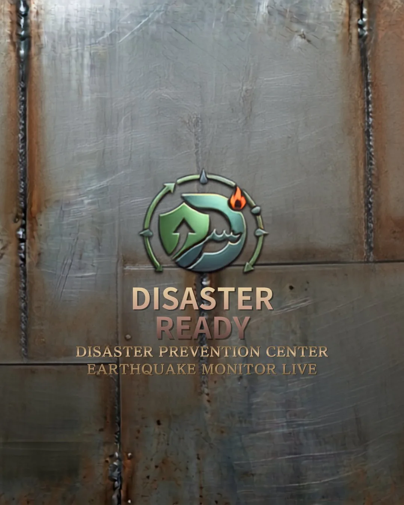
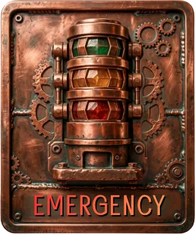
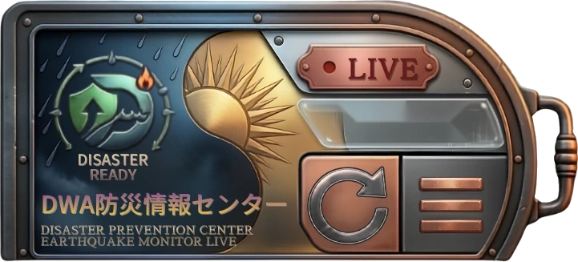

最大震度
--



緊急対応
都道府県を選ぶだけで、あなたの地域の地震リスク確率・活断層マップ・具体的な被害想定数値を確認できます。内閣府・地震調査研究推進本部の公表データ準拠。
| 機能 | 🗾 統合診断 | 🏚 被害想定 |
|---|---|---|
| 30年以内の発生確率 | ✔ | ✔ |
| 全国ランキング表示 | ✔ | — |
| 活断層ラインマップ | ✔ | — |
| 海溝型震源域ポリゴン | ✔ | — |
| 主要地震シナリオランキング | — | ✔ |
| 死者数・負傷者数 | — | ✔ |
| 建物全壊・半壊棟数 | — | ✔ |
| 火災（出火・焼失） | — | ✔ |
| 避難者・帰宅困難者 | — | ✔ |
| 経済被害額 | — | ✔ |
| 評価ランク（S/A/Z/X） | ✔ | 一部 |
| 想定シナリオ条件 | — | ✔ |
| 出典（国＋都道府県） | ✔ | ✔ |
LINEでスタンプを貯めて特典をゲット！
スマホのカメラでQRコードを読み取ると
LINEショップカードが表示されます
![LINE公式アカウント ショップカード QRコード @187ukqci]()
DWA 防災情報センター @187ukqci
※ 投稿いただいた口コミは、管理者の確認後に表示されます。個人情報や他者を傷つける内容の投稿はお控えください。
災害時の安否や連絡を書き残せる「災害用伝言板」を、専用ページでご用意しました。
引き継ぎコードで参加でき、ひとことメッセージを共有できます。
「防災情報センター」は、地震速報のリアルタイム配信・リスク診断ツール・避難所マップ・防災コラムを 無料で提供しています。24時間止まらない運営を、防災・減災に共感いただける企業の協賛で支えていただけませんか。
いつ起きるか分からない地震・災害。当サイトは、ひとりでも多くの方が「いざ」という時に正しく行動できるよう、 防災情報を無料で届けています。しかし速報配信やツールの維持・改善には、継続的な運営費が必要です。
私たちは媒体枠を切り売りするのではなく、「地域防災・減災に共感してくださる企業」とともに、社会的な安全インフラを育てていくことを目指しています。 防災という文脈は、企業の信頼性や社会貢献姿勢（CSR / ESG）と非常に相性が良く、御社のブランド価値向上にもつながります。
「人々の暮らしの安全」に関わるすべての事業者様を歓迎します。
※上記は税抜の参考価格です。掲出位置・期間・内容により個別にご相談を承ります。単発（イベント連動・期間限定）のご協賛も可能です。
下記フォームよりお気軽にお問い合わせください。資料送付・お見積り・個別のご提案も承ります。担当より 2〜3営業日以内 にご連絡します。